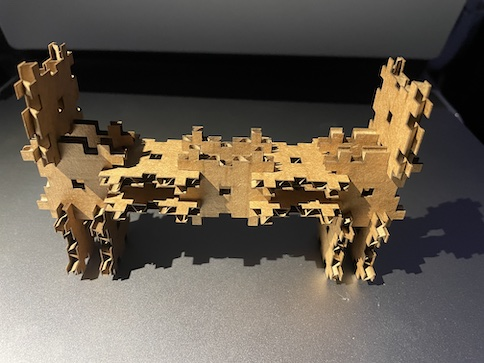
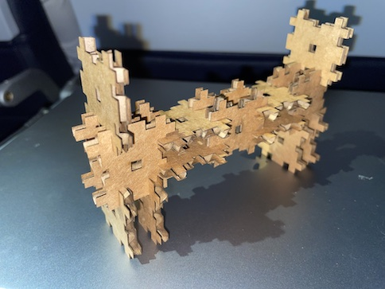
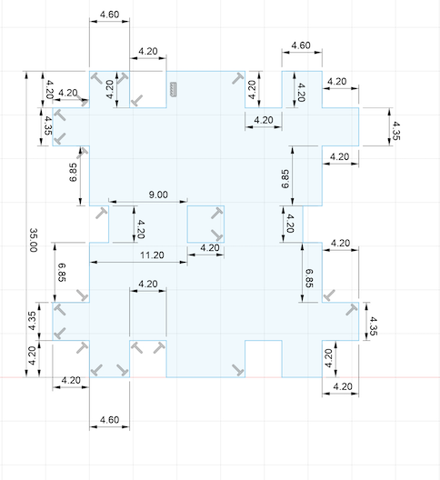

<br>
#### Week 2: Introduction
I used fusion 360 to create a 2 dimensional item that has several options of how to interlock with other iterations of itself.
<img src="../images/IMG_4783.jpg"alt="Iteration 1" width="484" height="363">
Here are examples of the different ways of interlocking the pieces:


Design:
I skecthed out the left side of the tile first and then created a mirror image for the right side. I made some slight alterations after laser cutting the first few attempts which meant that I had to ensure that the right side and the left side matched perfectly. In order to ensure the symmetry, I consistently used the Sketch Dimension tool.

____
I incorporated a pair of piano pedals I found in GrabCad and added a single rod to each pedal. I barely know how I did it.
<img src="../images/FAPedal.png"alt="Fabian Piano Pedal Modeling" width="1721" height="1039">
___
I also made a "rustic table" using fusion 360